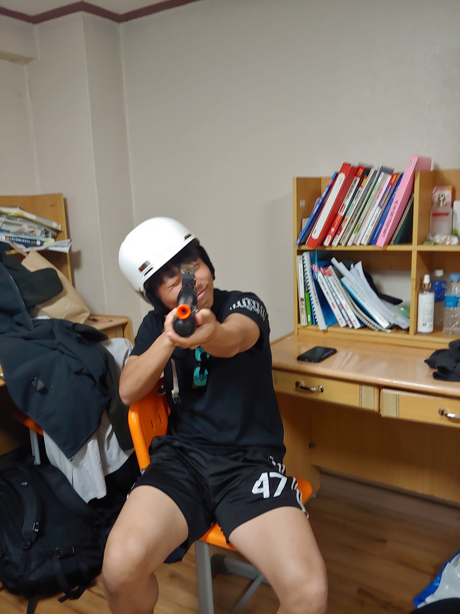

조민규의 그에 대해 알아보자
- 조민규는 누구인가
- 조민규의 축구실력
- 조민규의 연애강좌
조민규 그는 누구인가?

조민규(20)는 대한민국 축구 국가대표팀 최전방 공격수로써 백발백중의 골 결정력을 지니고있다.
손흥민과 이강인과의 환상적인 호흡으로 A매치 105경기 201골 242어시 200-200 클럽에 가입한 전세계 유일무이한 축구선수이다.
그는 대한민국,전세계 최연소 프로대뷔인 만12세에 전북FC에서 프로데뷔전을 가졌다.
그후 2년후 레알마드리드는 전북에 조민규의 바이아웃인 3억 5000만 파운드(5300억)의 이적료를 책정후 조민규를 품에 안았다.
라리가에서 앞도적인 퍼포머스를 펼치고 있던 조민규는 (리그 125경기 543골 401어시)
20살이 되자 국방의 의무를 하기전 돌연 양학리그에 가고싶다는 충격적인 발언 후 레알마드리드에서 CANON FC(2020~)로에 이적을 하였다.
그는 현재 하루에 79200(개)의 나사를 박으면서 CANON FC의 에이스로 거듭나고 있는중이다.
한편 국방부에서는 조민규의 군복부 소식에 썬크림 5만개와 톤업크림10만개 방탄모에 램프등을 장착하고 항시 조민규가
썬크림+톤업크림을 온몸에 바르게 해 혹시 모를 자신의 피부색을 이용한 밤에 탈영을 계획을 해도 충분히 찾을 수 있을것이라고 의견을 내 놓았다.
앞으로 군필이 된 조민규 그의 행보가 기대된다..!
#조민규 네이버카페 #민규의 피부는 하얘